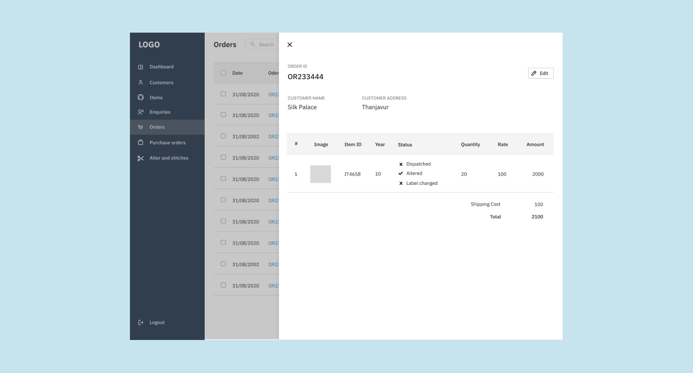
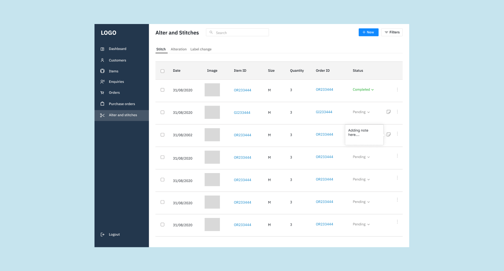

Story behind Teamlyst
During 2nd year of my college, I wanted to build a website. I had some knowledge in frontend development and no idea about the backend. I started looking for a person who can help me in developing backend for the website.
Luckily, I found a guy who can help me in developing backend for the website and he was from my class. One day, I was discussing with him the problem I had in finding someone to work with me. That's when the question in us raised "Why don't we work on this?". Finally, we teamed up again for building Teamlyst.
Between this
I was responsible for conducting user reseach, designing interfaces, and frontend development.
What about others?🤔
The discussion showed that we were facing the same issue. I wanted to know if other students face the same problem. This led me to conduct a research. I started conducting quantitative analysis using Google Forms.
I almost went to all the dormotories in my hostel to conduct qualitative analysis. I had casual conservation with the students and this helped me to understand their problem.
Insights
- Many individuals gave up their ideas without working on them if there was no support.
- Many individuals who possessed some level of expertise in a particular area, but lacked an opportunity to showcase their abilities.
- There is no direct way to find teammates to work on projects.
- There is no direct way to find teammates to work on projects.
User Persona

Userflow
Process
Before starting to design, I took time to understand their supply chain process. I was also able to know how they were using the spreadsheets - from adding enquiries to noting down the status of delivery and payments.
I started the sketching the interfaces. After that I asked them to explain what was in the sketch and if they can understand or meeting their expectations. I made some iterations in the sketch.
Then, I started designing the screens in Figma.
Flowchart
This flowchart depicts their process.
While adding an enquiry detail as well as after adding it, they had to switch between several Excel sheets.
In fact, they have to switch to 4 or 5 Excel sheets, but reduced it to 1 page in the web application through the design.

Final Designs





Reflection
It was the first time doing a freelance project. I also worked under constraints which gave me experience and this would help me in future work. I learnt to work with a client.